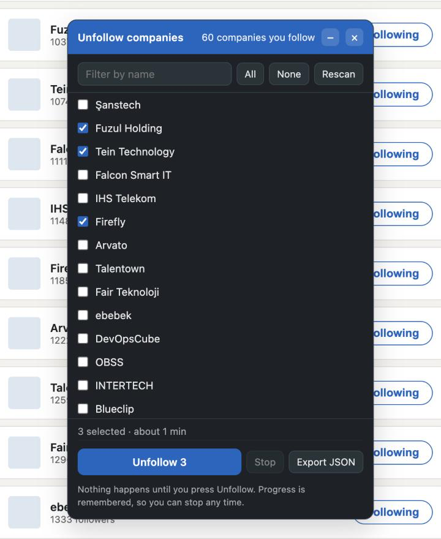

Copy one file. Paste it into your browser console. A panel opens, lists every company you follow, and unfollows the ones you tick — slowly enough that LinkedIn never notices.

allow pasting and press Enter once.Loading the file…
Install Tampermonkey or Violentmonkey, then open the file — it is already a valid userscript, so your manager offers to install it. After that the panel opens by itself every time you visit the page.
Or save it once as a Chrome DevTools snippet: Sources → Snippets → New snippet, paste, save, and run it later with ⌘⏎.
You should not run code you have not read, especially not next to a logged-in account. That is why this is plain, commented JavaScript rather than a minified blob — read it below, or on GitHub.
It talks to nothing but LinkedIn: no server, no analytics, no account, no network request of its own. It clicks the same buttons you would, and remembers what it finished in your browser's own storage.
Loading…